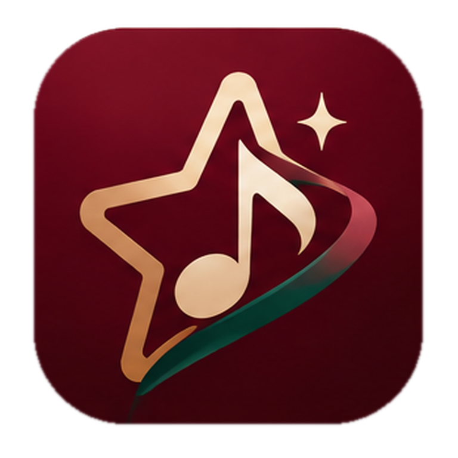

SUPERSTARVOCAL STUDIOFive small steps to grow your voice, explore new sounds, and sing what you love.
Every great voice grows one note at a time.
Sing at an easy volume and in a comfortable range. Never force a high note, and stop if singing hurts or the voice feels unusually tired. The demonstrations may not match every singer's range or key; it's okay to listen instead of matching an uncomfortable pitch.